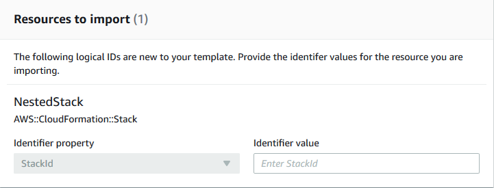

Anidamiento de una pila existente
Utilice la función resource import para anidar una pila existente dentro de otra pila existente. Las pilas anidadas son componentes comunes a los que se declara y hace referencia desde otras plantillas. De esta forma, puede evitar copiar y pegar las mismas configuraciones en sus plantillas y simplificar las actualizaciones de pilas. Si tiene una plantilla para un componente común, puede utilizar el recurso AWS::CloudFormation::Stack para hacer referencia a esta plantilla desde otra plantilla. Para obtener más información sobre las pilas anidadas, consulte Uso de pilas anidadas.
AWS CloudFormation solo admite un nivel de uso de anidamiento utilizando resource import. Esto significa que no puede importar una pila a una pila secundaria ni importar una pila que tenga secundarias.
Validación de importación de pila anidada
Durante una operación de importación de pila anidada, AWS CloudFormation realiza las siguientes validaciones.
-
La definición anidada
AWS::CloudFormation::Stacken la plantilla de pila principal coincide con la plantilla de la pila anidada real. -
Las etiquetas de la definición anidada
AWS::CloudFormation::Stacken la plantilla de pila principal coinciden con las etiquetas del recurso de pila anidado real.
Anidar una pila existente mediante la AWS Management Console
-
Agregue el recurso
AWS::CloudFormation::Stacka la plantilla de pila principal con unaRetainDeletionPolicy. En el siguiente ejemplo, la plantilla principalNestedStackes el destino de la importación.JSON
{ "AWSTemplateFormatVersion" : "2010-09-09", "Resources" : { "ServiceTable":{ "Type":"AWS::DynamoDB::Table", "Properties":{ "TableName":"Service", "AttributeDefinitions":[ { "AttributeName":"key", "AttributeType":"S" } ], "KeySchema":[ { "AttributeName":"key", "KeyType":"HASH" } ], "ProvisionedThroughput":{ "ReadCapacityUnits":5, "WriteCapacityUnits":1 } } }, "NestedStack" : { "Type" : "AWS::CloudFormation::Stack", "DeletionPolicy": "Retain", "Properties" : { "TemplateURL" : "https://s3.amazonaws.com/cloudformation-templates-us-east-2/EC2ChooseAMI.template", "Parameters" : { "InstanceType" : "t1.micro", "KeyName" : "mykey" } } } } }YAML
AWSTemplateFormatVersion: 2010-09-09 Resources: ServiceTable: Type: 'AWS::DynamoDB::Table' Properties: TableName: Service AttributeDefinitions: - AttributeName: key AttributeType: S KeySchema: - AttributeName: key KeyType: HASH ProvisionedThroughput: ReadCapacityUnits: 5 WriteCapacityUnits: 1 NestedStack: Type: 'AWS::CloudFormation::Stack' DeletionPolicy: Retain Properties: TemplateURL: >- https://s3.amazonaws.com/cloudformation-templates-us-east-2/EC2ChooseAMI.template Parameters: InstanceType: t1.micro KeyName: mykey -
Abra la consola de AWS CloudFormation.
-
En la página Stacks (Pilas), con la pila principal seleccionada, elija Stack actions (Acciones de pila) y, a continuación, elija Import resources into stack (Importar recursos a pila).

-
Lea la página de información general sobre la importación para obtener una lista de los elementos que debe proporcionar durante esta operación. A continuación, haga clic en Next.
-
En la página Specify template (Especificar plantilla), proporcione la plantilla principal actualizada mediante uno de los métodos siguientes y, a continuación, elija Next (Siguiente).
-
Seleccione Amazon S3 URL (URL de Amazon S3), y, a continuación, especifique la URL de la plantilla en el cuadro de texto.
-
Seleccione Upload a template file (Cargar un archivo de plantilla) y, a continuación, busque la plantilla.
-
-
En la página Identify resources (Identificar recursos), identifique el recurso
AWS::CloudFormation::Stack.-
En Identifier property (Propiedad del identificador), elija el tipo de identificador de recurso. Por ejemplo, un recurso
AWS::CloudFormation::Stackse puede identificar mediante la propiedadStackId. -
En Identifier value (Valor del identificador), escriba el valor de la propiedad real. Por ejemplo,
arn:aws:cloudformation:us-west-2:12345678910:stack/mystack/5b918d10-cd98-11ea-90d5-0a9cd3354c10 -
Elija Next (Siguiente).
-
-
En la página Specify stack details (Especificar detalles de pila) modifique los parámetros y, a continuación, elija Next (Siguiente). Esto crea automáticamente un conjunto de cambios.
importante
La operación de importación produce un error si modifica parámetros que inician una operación de creación, actualización o eliminación.
-
En la página Review
stack-name(Revisar nombre-pila), confirme que se está importando el recurso correcto y, a continuación, elija Import resources (Importar recursos). Esto ejecuta automáticamente el conjunto de cambios creado en el último paso. En este momento, se aplican todas las etiquetas de nivel de pila a los recursos importados. -
Se muestra el panel Events (Eventos) de la página Stack details (Detalles de la pila) de la pila principal.

nota
No es necesario ejecutar la detección de desviación en la pila principal después de esta operación de importación porque el recurso
AWS::CloudFormation::Stackya estaba administrado por AWS CloudFormation.
Anidar una pila existente mediante la AWS CLI
-
Agregue el recurso
AWS::CloudFormation::Stacka la plantilla de pila principal con unaRetainDeletionPolicy. En el siguiente ejemplo, la plantilla principalNestedStackes el destino de la importación.JSON
{ "AWSTemplateFormatVersion" : "2010-09-09", "Resources" : { "ServiceTable":{ "Type":"AWS::DynamoDB::Table", "Properties":{ "TableName":"Service", "AttributeDefinitions":[ { "AttributeName":"key", "AttributeType":"S" } ], "KeySchema":[ { "AttributeName":"key", "KeyType":"HASH" } ], "ProvisionedThroughput":{ "ReadCapacityUnits":5, "WriteCapacityUnits":1 } } }, "NestedStack" : { "Type" : "AWS::CloudFormation::Stack", "DeletionPolicy": "Retain", "Properties" : { "TemplateURL" : "https://s3.amazonaws.com/cloudformation-templates-us-east-2/EC2ChooseAMI.template", "Parameters" : { "InstanceType" : "t1.micro", "KeyName" : "mykey" } } } } }YAML
AWSTemplateFormatVersion: 2010-09-09 Resources: ServiceTable: Type: 'AWS::DynamoDB::Table' Properties: TableName: Service AttributeDefinitions: - AttributeName: key AttributeType: S KeySchema: - AttributeName: key KeyType: HASH ProvisionedThroughput: ReadCapacityUnits: 5 WriteCapacityUnits: 1 NestedStack: Type: 'AWS::CloudFormation::Stack' DeletionPolicy: Retain Properties: TemplateURL: >- https://s3.amazonaws.com/cloudformation-templates-us-east-2/EC2ChooseAMI.template Parameters: InstanceType: t1.micro KeyName: mykey -
Cree un conjunto de cambios de tipo
IMPORTcon los siguientes parámetros.--resources-to-importno es compatible con YAML en línea.>aws cloudformation create-change-set --stack-nameTargetParentStack--change-set-nameImportChangeSet--change-set-typeIMPORT--resources-to-import "[{\"ResourceType\":\AWS::CloudFormation::Stack\",\"LogicalResourceId\":\"MyStack\",\"ResourceIdentifier\":{\"StackId\":\"arn:aws:cloudformation:us-east-2:123456789012:stack/mystack-mynestedstack-sggfrhxhum7w/f449b250-b969-11e0-a185-5081d0136786\"}}] --template-bodyfile://templateToImport.jsonLa AWS CLI también admite archivos de texto como entrada para el parámetro
resources-to-import, como se muestra en el ejemplo siguiente.--resources-to-import:file://resourcesToImport.txtEn este tutorial,
file://resourcesToImport.txtcontiene lo siguiente.JSON
[ { "ResourceType":"AWS::CloudFormation::Stack", "LogicalResourceId":"MyStack", "ResourceIdentifier": { "StackId":"arn:aws:cloudformation:us-east-2:123456789012:stack/mystack-mynestedstack-sggfrhxhum7w/f449b250-b969-11e0-a185-5081d0136786" } } ]YAML
ResourceType: 'AWS::CloudFormation::Stack' LogicalResourceId: MyStack ResourceIdentifier: StackId: >- arn:aws:cloudformation:us-east-2:123456789012:stack/mystack-mynestedstack-sggfrhxhum7w/f449b250-b969-11e0-a185-5081d0136786 -
Revise el conjunto de cambios para asegurarse de que se está importando la pila correcta.
>aws cloudformation describe-change-set --change-set-nameImportChangeSet -
Ejecute el conjunto de cambios para importar la pila en la pila principal de origen. En este momento, se aplican todas las etiquetas de nivel de pila a los recursos importados. Una vez completada correctamente la operación de importación
(IMPORT_COMPLETE), la pila se anidará correctamente.>aws cloudformation execute-change-set --change-set-nameImportChangeSetnota
No es necesario ejecutar la detección de desviación en la pila principal después de esta operación de importación porque el recurso
AWS::CloudFormation::Stackya estaba administrado por AWS CloudFormation.